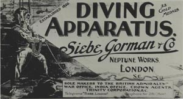

|
|
SIEBE GORMAN HISTORY - ROB PALMER
From their earliest days at 5 Denmark Street, London, now the location of a music shop, Siebe Gorman moved their operation to the Neptune Works at Boniface Street in 1876.
Blacksmith’s Shop
Output trebbled when the company was based at this new location.
Gunmetal Casting

In 1894 Robert Davis became general manager, at the age of 24,Pump Assembly Shop
later becoming managing director when William Gorman died in 1904.
SIR ROBERT H. DAVIS (1870-1965)
He would hold this position until 1960 - 5 years before his own death.
At 2.05am on 11th May, 1941 a Luftwaffe incendiary bomb ended operations at Lambeth. For a year, preparations had been in progress for a move to Chessington, and the gutting by fire served to speed up the transfer.
Manufacturing was quickly resumed and output peaked in 1950, with the Standard Diver Dress remaining in full scale production until 1955.
Barry Stephens became managing director in 1960 and the company went into the aqualung business, along with continuing chamber production and some bell diving systems.
Siebe Gorman moved to Cwmbran in 1975 where they now [1992], in completion of a full circle, concentrate on firefighting breathing equipment.
Unlike the bulky standard diver technology, a highly compact, current product [1992] serves as an escape set from capsized helicopters, for military or civilian use.
|
|